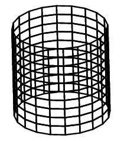
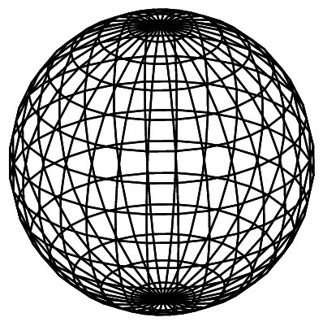
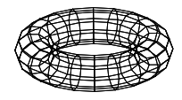

|
Notes for October 21 class -- Parametric surfaces
|
Parametric cylinder
You can describe many surfaces parametrically,
using the two parameters
0 ≤ u ≤ 1 and
0 ≤ v ≤ 1
to define values of x, y and z over the surface.
For example,
the open cylindrical section to the right
is described by:
y = cos(θ)
x = sin(θ)
z = 2 * v - 1
where:
θ = 2 π u
|
|

|
|
Parametric sphere
Similarly,
the longitude / latitude parameterization of a sphere to the right
is described by:
x = cos(φ) * cos(θ)
y = cos(φ) * sin(θ)
z = sin(φ)
where:
θ = 2 π u
φ = π v - π / 2
|
|

|
|
Parametric torus (donut)
The longitude / latitude parameterization of a torus
is described by:
x = (1 + r * cos(φ)) * cos(θ)
y = (1 + r * cos(φ)) * sin(θ)
z = r * sin(φ)
where:
θ = 2 π u
φ = 2 π v
r = the radius of the "inner tube".
|
|

|
|
Homework, due by start of class on Wednesday October 28
As always, you get extra points for making something that is fun, exciting, beautiful or original.
|
| |